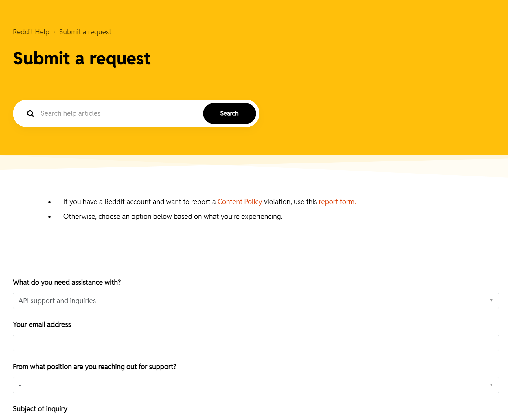
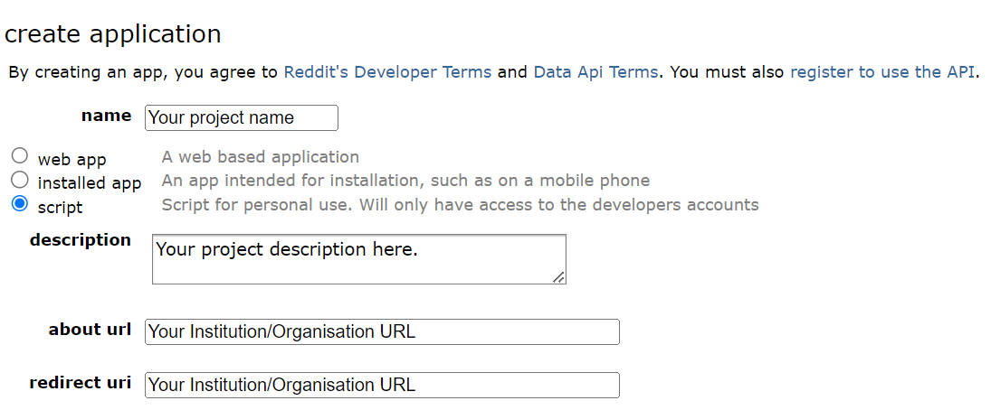
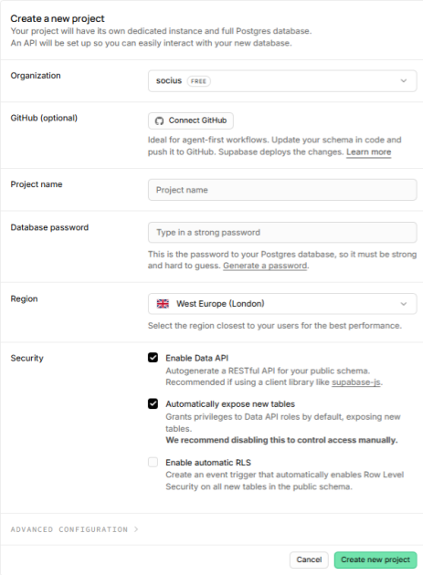
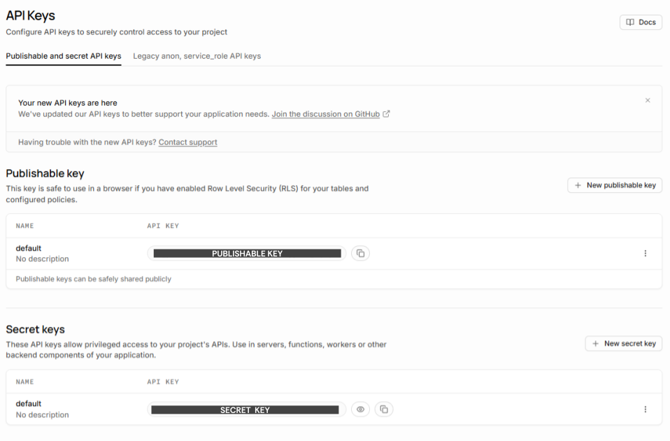

Prerequisites#
Reddit API#
Create a Reddit Account: You will need a Reddit account to access the Reddit API. If you don’t have one already, head over to reddit.com and sign up for a new account.
Register as a Developer: Follow Reddit’s API guide to register as a developer. This step is necessary to create a script app and obtain the required credentials for API access.
{kind=link}

Create a Script App: Once registered as a developer, create a script app. This will provide you with the
PUBLIC_KEYandSECRET_KEYcredentials needed to authenticate with the Reddit API during the tutorial.
{kind=link}

Supabase API#
Sign Up for Supabase: Visit supabase.com and sign up for a new account. This will allow you to create a project and obtain the necessary credentials for storing the Reddit data.
Create a New Project: After signing up, create a new project in Supabase. Give it a name, choose a strong database password and the region closest to you. Under “Security”, keep Enable Data API ticked: RedditHarbor talks to your database through the Data API. Once the project is ready, it has a project
URLof the formhttps://<project-id>.supabase.co(shown under “Settings > Data API”, or by clicking “Connect” at the top of the dashboard).
{kind=link}

Access Credentials: Open “Settings > API Keys”. On the Publishable and secret API keys tab, reveal and copy the Secret key (it starts with
sb_secret_). This is theSECRET_KEYyou will use asSUPABASE_KEY; it allows RedditHarbor to write to your tables. Do not use the Publishable key (sb_publishable_): it has no write access, and RedditHarbor will refuse it.
{kind=link}

Note
Supabase is retiring the legacy anon and service_role keys (shown on the Legacy anon, service_role API keys tab) by the end of 2026. They still work for now, and RedditHarbor prints a warning if you use one, but new projects should use the secret key described above. If you followed an older version of this guide, see Upgrading from 0.3.
Environment Setup#
Install Visual Studio Code (Recommended): We recommend installing Visual Studio Code, a popular and user-friendly code editor. Once installed, make sure to get the Python extension for full support in running and editing Python apps.
Alternatively, you can use your preferred code editor or IDE, but please note that Jupyter Notebook is not the ideal workspace for running RedditHarbor.
Install Python: Install a supported version of Python on your system:
Windows: Install Python from python.org. Use the “Download Python” button that appears first on the page to download the latest version.
macOS: The system install of Python on macOS is not supported. Instead, we recommend using a package management system like Homebrew. To install Python using Homebrew on macOS, run
brew install python3in the Terminal.
Install Python Extension (for Visual Studio Code users): If you’re using Visual Studio Code, open the editor and navigate to the sidebar (or press
Ctrl+Shift+X). Search for “python” in the Extensions Marketplace and install the Python extension.
Command Prompt (Windows Users)#
If you’re a Windows user, we recommend using Git Bash, one of the best command prompts for a Linux-style command-line experience. Follow these steps:
Follow the setup wizard, selecting all the default options
At the “Adjusting your PATH environment” step, select the “Use Git from the Windows Command Prompt” option
Once installed, you will have access to Git Bash, which provides Linux-style command-line utilities and Git functionality in Windows.
If you run into difficulties during setup, open an issue on GitHub.